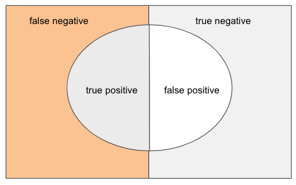

적합 문서
검색엔진의 성능은 적합 문서(relevant document)를 잘 찾는 능력이다. 적합 문서를 잘 찾으려면 적합성을 고려해야 한다. 적합성은 사용자 적합성과 주제 적합성을 고려한다. 사용자 적합성은 사용자에게 맞는 적합한 문서를 찾았는지에 대한 것이다. 예를 들어 질의에 맞는 문서를 찾았지만, 사용자에게 올바른 답변을 줄 수 없는 문서라면 사용자 적합성이 없다고 본다. 주제 적합성은 사용자 질의에 맞는 적합한 문서를 찾았는지에 대한 것이다. 단순 grep과 같은 키워드 일치 만으로 문서를 찾았다면 관련 문서는 찾았지만, 사용자 주제에 맞지 않는 문서가 검색될 수 있다.
평가
적합 문서를 얼마 잘 찾을 수 있는지를 객관적으로 측정하기 위해 평가(evaluation)를 고려한다. 검색 엔진은 이진 분류(binary classification) 관점에서 평가를 한다. 평가의 측도 정밀도(precision)와 재현율(recall)을 이용한다. 정밀도는 검색된 문서 중에 실재 적합 문서의 비율을 의미한다.
$$
precision=\frac{actual값이~TRUE인~개수}{predicted~값이~TRUE인~개수}
$$
정밀도는 검색된 문서 중에 실재 적합한 문서의 비율을 찾는다. 재현율은 전체 적합 문서 중에 검색된 문서 중에 적합 문서의 비율을 의미한다. 재현율을 계산할 수 있다는 것은 모든 적합 문서의 개수가 몇 개인지를 안다는 것을 의미한다. 다른 관점에서 재현율을 계산하려면 적합 문서 개수와 적합 문서의 대상을 모두 알 수 있어야 하므로, 소규모 컬렉션에 대해 사용될 수 있다.
$$ recall=\frac{predicted~값이~TRUE인~개수}{actual~값이~TRUE인~개수} $$
웹 검색엔진에 대해서 수십억 이상의 문서들에 대해서 적합 문서를 알기 어렵기 때문에 보통 TREC과 같은 평가셋을 이용한다.
confusion matrix
머신러닝의 이진 분류에서, 통계적 분류 관점에서 정밀도과 재현율을 정의하기 위해 먼저 confusion matrix를 정의한다.
| PREDICTION | PREDICTION | ||
|---|---|---|---|
| TRUE(class) | FALSE(class) | ||
| ACTUAL | TRUE(class) | TP (True Positive) | FN (False Negative) |
| ACTUAL | FALSE(class) | FP (False Positive) | TN (True Negative) |
벤다이어그램으로 직관적으로 실제 결과와 예측 결과간의 관계를 살펴 볼 수 있다.

정밀도
정밀도(precision)은 모델의 출력이 TRUE라고 판정한 결과 중에 실재 TRUE 인 예제의 비율이다. 정밀도가 높다는 것은 모델의 정확도가 높아진다고 볼 수 있다.
$$
precision=\frac{TP}{TP + FP}
$$
재현율
재현율(recall)은 실재 TRUE 인 결과 중에서 모델의 출력이 TRUE라고 판정한 예제의 비율이다. 재현율이 높다는 것은 모델의 정답 커버리지가 높다고 볼 수 있다.
$$
recall=\frac{TP}{TP + FN}
$$
정확도
정확도(accuracy, 정확률)은 얼마나 정확한지를 나타이다. 분류 문제에 있어 100개 예제 중 90개를 정확히 분류했다면 정확도는 90%가 된다.
$$ accuracy=\frac{TP + TN}{TP+FN+FP+TN}=\frac{correct~predictions}{total~predictions} $$
F1 Score
F1 Score은 분류 모델의 평가지표(metric)이다. F1 Score는 recall과 precision의 조화 평균이다. $$ F1~Score=2*\frac{recall*precision}{recall+precision} $$